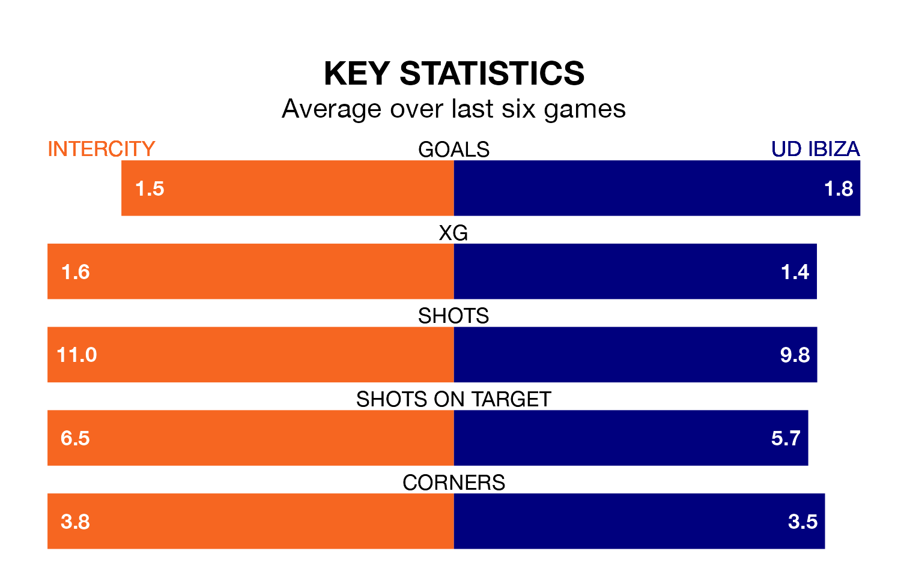

UD Ibiza face Intercity on Sunday seeking to protect their formidable unbeaten run in Primera Division RFEF Group 2.
Ibiza are unbeaten in 10, with seven wins and three draws, ahead of the 11am kick-off.
They face an Intercity team who have won three and drawn five over the same number of games.
With 41 goals in 20 games so far this season, Ibiza are the league's second-highest scorers with 2.0 goals per game. And they are conceding fewer than average, letting in 16 goals at a rate of 0.8 per game.
Intercity, meanwhile, are average scorers, with 1.2 goals per game. They have conceded 1.1 goals per game.
The away team are second in the table after 20 games, of which they have won 14 and drawn five, earning 47 points.
The hosts are seven places behind Ibiza in ninth, with seven wins and eight draws putting them on 29 points.
Intercity's last match was on Sunday, a 1-1 draw against Granada B, with Oriol Soldevila Puig getting the goal for Intercity.
Ibiza beat CD Alcoyano 3-0 last time out, also on January 21, with Alejandro Gallar Falguera, Nikolai Obolski and Serge Patrick Njoh Soko on the scoresheet.
Updated: 09:18 (UTC), 23/01/24